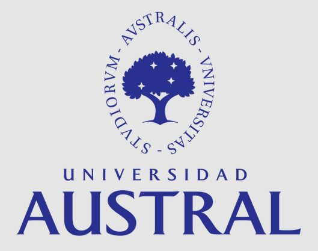

Inteligencia Artificial Generativa (AI Gen)
Universidad Austral · Ingeniería de Software · clases en orden de dictado, los miércoles.
Clases
-
1
-
2
-
3
Miércoles 19 de agosto
NN, input, output, backpropagation, funcion de error, training
-
4
-
5
-
6
-
7
Miércoles 16 de septiembre
MCP & Tools; LLM - Embeddings, Tokens, word2Vec, Sec, Transformers
-
8
Miércoles 23 de septiembre
Transformers: atención, el bloque completo y la familia de modelos
-
9
Miércoles 30 de septiembre
LLM training: pre-training, SFT, RLHF, herramientas y fine-tuning
-
10
Miércoles 7 de octubre
Agentes: sistemas multiagente, especialización, contexto y orquestación
-
—
Miércoles 14 de octubre
Sin clase
-
11
Miércoles 21 de octubre
Vision: Stable Difussion y Adversarial Networks
-
12
Miércoles 28 de octubre
Vision: CNN (Senales & Imagenes)
Próximamente -
13
Miércoles 4 de noviembre
Seguridad y Etica
Próximamente -
14
Miércoles 11 de noviembre
A definir
Próximamente
Trabajos prácticos
- TP 1 Clase 2 · Viernes 15 de agosto Corta, del caos a producción
- TP 2 Clase 3 · Viernes Sep 4 ¿Cuánto vale esta casa?
- TP 3 Clase 10 · Viernes 9 de octubre RAG, MCP y Transformers en el Hospital Arroyo Claro
- TP 4 (final) Clase — · Viernes 20 de noviembre El agente de admisión de guardiaKit y cómo correrlo
En cada presentación: → ← para avanzar, Esc para ver todas las diapositivas, F pantalla completa y S notas del orador.